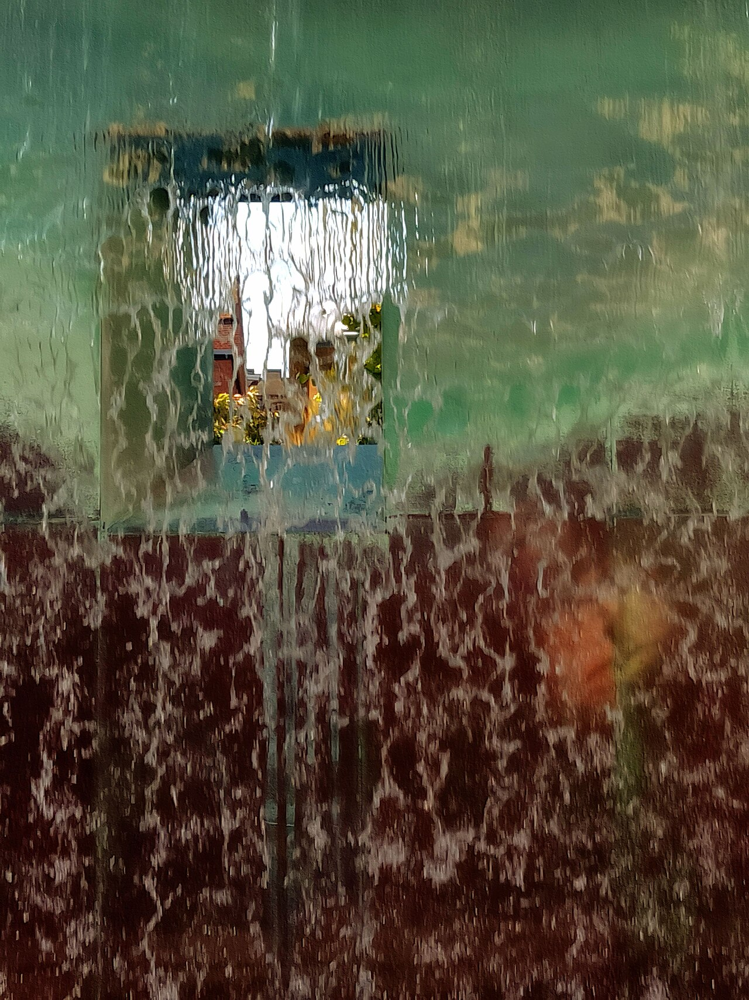
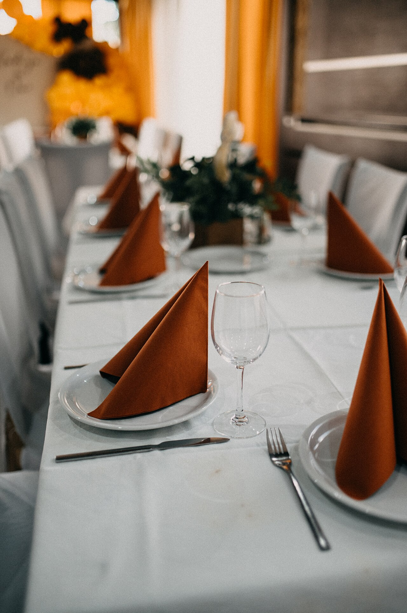

HOME TEXTILE MANUFACTURING · YIWU, CHINA
Custom shower curtains and tablecloths, made for your market.
From digital printing to finished sewing, Yiwu Zhian Textiles supports OEM, ODM, private-label and volume production for retailers, importers, wholesalers and e-commerce sellers.
- OEM & ODM
- Custom Printing
- Private Label
FROM CONCEPT TO PRODUCTION
Flexible customization
Pattern · Size · Color · Material · Packaging
CORE PRODUCTS
Focused product lines, flexible development.
We support standard programs and custom projects for different markets, channels and price points.

01
Shower Curtains
Printed, solid-color and customized shower curtain programs for retail, wholesale and e-commerce channels.
- Custom patterns and dimensions
- Digital and heat-transfer printing
- Optional packaging and private label

02
Tablecloths
Custom tablecloth production with flexible colors, patterns and sizes for home, hospitality and event applications.
- Printed and customized designs
- Multiple size options
- Retail-ready packaging support
PRODUCTION CAPABILITIES
Printing, sewing and finishing under one production workflow.
Digital Printing
Suitable for flexible pattern development and multi-design production.
Heat Transfer
Consistent printed results for repeatable production programs.
Sewing
In-house sewing capability for converting printed textiles into finished products.
Volume Production
Monthly production capacity exceeding 100,000 pieces.
OEM & ODM
Your design, your specifications, your label.
We work with buyers on product development and production requirements. Project feasibility, quotation and lead time are confirmed according to the final specification.
- 01Share your requirements
Product, size, material, artwork, quantity and packaging.
- 02Specification review
We review production feasibility and prepare a quotation.
- 03Sample confirmation
Details and appearance are confirmed before volume production.
- 04Production
Printing, sewing, finishing and packing follow the approved specification.
ABOUT ZHIAN
A responsive manufacturing partner from Yiwu.
Yiwu Zhian Textiles Co., Ltd. was established in May 2026 in Yiwu, Zhejiang, China. Our approximately 14,000 m² production facility has more than 50 team members and is equipped with digital printing machines, heat transfer printing machines and sewing machines.
We focus on shower curtains and tablecloths, serving international buyers seeking flexible customization, production capacity and direct communication with a manufacturer.
CONTACT SALES
Tell us what you want to develop.
For a more accurate quotation, please include your product type, dimensions, material, artwork, target quantity and packaging requirements.
ContactMr. Ni
Phone / WhatsApp+86 158 6798 8925
Email640987594@qq.com
LocationYiwu, Zhejiang, China
Email Your Inquiry